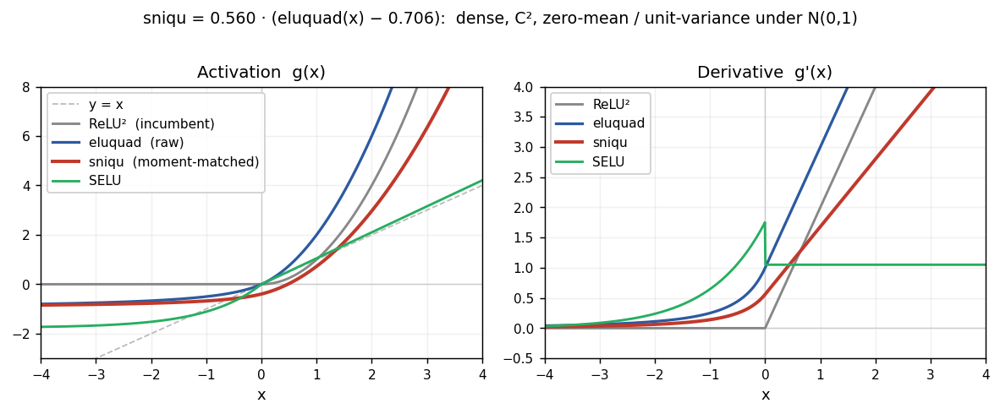

Adam Holmes · June 2026 · modded-nanogpt fork
Modded-NanoGPT is a community speedrun: train a ~124M-parameter GPT on FineWeb to val loss ≤3.28 as fast as possible on 8×H100. The record is ~1.4 minutes, using Muon, FP8 matmuls, sliding-window attention, and ReLU² (max(0,x)²) in the MLP blocks.
I asked whether changing the activation could improve on the record — and found a more interesting answer: activation and gating rankings change dramatically depending on which optimizer you use.
The MLP block is either standard (W₂·act(W₁x)) or gated (W₃·[act(W₁x) ⊙ (W₂x)] — two projections multiplied, the basis of SwiGLU/GeGLU in modern LLMs). Activations tested: ReLU², GELU, SiLU, x|x| (signed square), bilinear (no activation), and variants with a learnable slope or curvature.
Mean val loss at 4000 steps, 124M scale, 5 seeds, each activation at its own best LR (2-seed grid probe), batch 16. Significance via paired t-test against relu2.
| Activation | MLP | n | Mean val loss | Δ vs relu2 | p |
|---|---|---|---|---|---|
| reglu — gated, ReLU² | gated | 5 | 6.162 | −0.105 (all 5 seeds) | 0.0001 |
| xglu — gated, x + x|x| | gated | 5 | 6.206 | −0.061 (all 5 seeds) | 0.001 |
| relu2 — ReLU² (record incumbent) | standard | 5 | 6.267 | baseline | — |
| sniqu — Self-Normalizing IQU | standard | 5 | 6.562 | +0.295 (all 5 seeds) | 0.054 ns* |
* sniqu seed 3 produced an outlier (7.03 vs ~6.45 for the others), consistent with instability at lr=1e-3. Excluding it: n=4, mean=6.445, Δ=+0.176. Either way, sniqu is clearly worse than relu2 under AdamW.
Mean val loss at 4000 steps, 124M scale, each activation at its own best LR (2-seed grid probe), batch 16. Significance via paired t-test against relu2.
| Activation | MLP | n | Mean val loss | Δ vs relu2 | p |
|---|---|---|---|---|---|
| sniqu — Self-Normalizing IQU (derivation below) | standard | 9 | 5.653 | −0.076 (all 9 seeds) | p<0.0001 |
| iqu — x+x² / x/(1−x) (derivation below) | standard | 9 | 5.713 | −0.002 (mixed sign) | 0.88 ns |
| relu2_s1 — ReLU(x)²+ReLU(x) | standard | 9 | 5.719 | −0.010 (mixed sign) | 0.57 ns |
| relu2 — ReLU² (record incumbent) | standard | 9 | 5.729 | baseline | — |
| selu | standard | 2* | 5.833 | +0.114 | clearly worse |
| xglu — gated, x|x| | gated | 4 | 5.854 | +0.098 | 0.024 |
| bilinear — gated, no activation | gated | 4 | 5.859 | +0.103 | 0.025 |
| reglu — gated, ReLU² | gated | 4 | 5.860 | +0.104 | 0.042 |
| dquad — gated, double-quadratic | gated | 4 | 5.918 | +0.162 | 0.013 |
* selu n=2 seeds — enough to flag as clearly worse. Gated variants and standard MLPs come from two paired sub-studies sharing the same seeds.
relu2_s1 is a null (p=0.57) and iqu is a null (p=0.88, n=9, mixed signs). Shape change alone (iqu) fails; moment-matching alone (selu) fails; only their combination (sniqu) wins. Self-normalization is the active ingredient.
The phase 1 results above used a simplified training harness (no RoPE, no value embeddings, no bigram embeddings, no skip connections). To check whether the rankings held in the actual speedrun setup, I ran a second study (phase 2) using the real architecture from train_gpt.py — including RoPE/YaRN, value embeddings, bigram embeddings, paired-head attention, skip and backout connections — on a single GPU with SDPA substituted for Flash Attention 3. Each activation got its own best LR from a per-activation sweep (1 seed × 3 LRs), and comparisons ran 3 seeds × 2000 steps.
The 2×2 holds in the full architecture:
| Activation | Muon val loss | Δ vs relu2 | NorMuon val loss | Δ vs relu2 |
|---|---|---|---|---|
| sniqu | 10.118 | −0.006 | 10.115 | −0.001 |
| relu2_s1 | 10.122 | −0.002 | 10.114 | −0.002 |
| relu2 | 10.124 | baseline | 10.116 | baseline |
| xglu | 10.135 | +0.012 | 10.130 | +0.014 |
| reglu | 10.140 | +0.016 | 10.132 | +0.016 |
Phase 2: full speedrun architecture, per-activation best LR, 3 seeds × 2000 steps. Loss values are not comparable to phase 1 (different architecture, 2000 vs 4000 steps, softcapped cross-entropy). Rankings are what matter.
Gating still loses both optimizers; sniqu still wins Muon (same direction as phase 1, smaller gap at fewer steps). The rankings are consistent.
An earlier powered study (9 seeds, fixed LR=0.02 for all) appeared to show sniqu losing to relu2 under NorMuon by 0.078. That prompted a concern: what if sniqu's optimal LR under NorMuon is different from relu2's, and we were comparing at the wrong point?
The phase 2 per-activation LR sweep answered it directly. Sniqu does prefer a higher LR than relu2 under NorMuon (0.04 vs 0.02). At those respective best LRs, the gap collapses to 0.001 — within noise at n=3 seeds. The 0.078 difference was almost entirely explained by the LR mismatch.
The sweep also shows the ranking is stable across the tested LR grid — relu2 edges sniqu at every LR point individually (differences of 0.005–0.014), but with sniqu at its own best LR those differences vanish. Under NorMuon, sniqu and relu2 are effectively equivalent. relu2_s1 is marginally ahead of both (by ~0.002), but n=3 is not enough to call that significant.
For the record optimizer (NorMuon), no activation tested here clearly beats relu2. The most honest summary: relu2 and relu2_s1 are approximately tied for best, sniqu is competitive but not ahead, and gating is clearly out.
The speedrun uses RMSNorm on Q and K (scale-only normalization) since record #5. I tested whether replacing it with LayerNorm — which also removes the mean, eliminating a rank-1 "DC" direction that could contaminate Muon's gradient orthogonalization — would help. It doesn't: relu2 with LayerNorm scored 10.116 vs 10.116 with RMSNorm (Δ < 0.001); sniqu was marginally worse with LayerNorm (10.120 vs 10.115). Zero-centering Q and K provides no measurable benefit on top of scale normalization.
I started with iqu — a new C² piecewise activation: x + x² for x ≥ 0, and x/(1−x) for x < 0. No dead zone, costs one reciprocal (no transcendentals), and value/slope/curvature all match at the origin. I thought the interesting nonlinear shape might help under Muon.
It didn't — iqu is a confirmed null (p=0.88, n=9). But the reason pointed to a fix. For x ∼ N(0,1), iqu's output has mean ≈ 0.71 and variance ≈ 3.19: every MLP layer multiplies the residual stream scale by √3.19 ≈ 1.8× and adds a DC offset. Under AdamW this doesn't matter much — AdamW adapts per-parameter. Under Muon it does: Muon orthogonalizes each weight-matrix update, and a non-zero activation mean injects a rank-1 "DC" direction into the gradient that Muon treats as genuine signal, degrading conditioning.
The fix is the same trick SELU used: solve for the shift β and scale λ that make the output zero-mean, unit-variance under Gaussian input. Compute iqu's moments by Gauss–Hermite quadrature — μ = E[h] = 0.706, σ² = Var[h] = 3.188 — then define:
sniqu(x) = λ (h(x) − β), β = 0.706, λ = 0.560.
By construction, E[sniqu] = 0 and Var[sniqu] = 1. And it works: sniqu beats relu² by 0.076 under Muon (p<0.0001, all 9 seeds), while iqu (same shape, unnormalized) is a null. The normalization — not the shape — is the active ingredient.

AdamW normalizes each parameter's update by its own gradient RMS, making it forgiving of scale and conditioning. Under AdamW, architectures compete on raw expressivity: gating adds multiplicative interactions and wins; ReLU²'s ~50% dead zone concentrates gradient signal onto fewer neurons, keeping updates informative.
Muon replaces each weight matrix's update with its nearest orthogonal matrix. This is powerful but makes two things matter that AdamW ignores:
Why gating loses under Muon. Gating's multiplicative interaction entangles W₁ and W₂'s gradients — the useful update direction for each depends on what the other is currently doing. Muon orthogonalizes each matrix independently, spreading energy into directions that weren't meaningfully updated by either. The joint credit assignment that gating requires is exactly what per-matrix orthogonalization can't handle. On top of that, plain standard MLPs already train much better under Muon than AdamW (loss drops from 6.93 to 6.20 in these runs), closing the expressivity gap that gating was filling.
Why sniqu wins over relu2 under Muon but not AdamW. A non-zero activation mean injects a rank-1 "DC" direction into the gradient that Muon treats as genuine signal, degrading conditioning. ReLU²'s output mean (~0.57 for standard-normal input) creates exactly this contamination; sniqu eliminates it by design. Under AdamW the per-parameter normalization handles mean and scale automatically, so sniqu's moment-matching buys nothing — and relu2's dead zone becomes an asset, concentrating gradient signal and acting as a natural stabilizer at higher LRs.
The one-sentence summary: AdamW rewards expressivity and sparsity; Muon rewards conditioning and scale control. Every result in this study follows from that.
An open conjecture (being tested). Gating's problem under Muon is the entangled gradients between the gate and value branches. A natural fix: use AdamW on the gate weights and Muon on the value/projection weights. The gate is a routing mechanism with skewed gradient statistics — exactly where AdamW's per-parameter adaptation helps most. This is the same logic behind the record already using AdamW on embeddings and Muon on weight matrices. Results from this hybrid-optimizer experiment are pending.
The whole activation canon — GELU (2016), SwiGLU (2020) — was established under Adam. These results show those rankings don't automatically carry over to Muon.
train_gpt.py behind a one-line env flag.